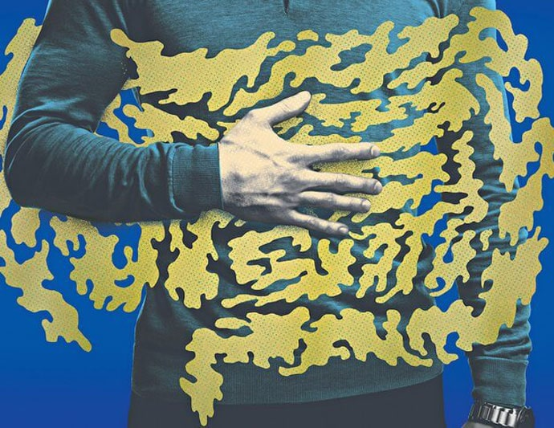
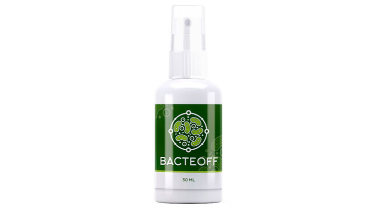

-
 liqid00710
минут на прочтение
liqid00710
минут на прочтение
ПОД УГРОЗОЙ: “Призрак” бродит по Европе или как нас убивает то, что скрыто
Скорее всего я сейчас шокирую каждого читателя: на нас напал невидимый глазом враг. Точнее обнаружить его можно только после вскрытия… Жутко, правда? Но реальность такова, что по всей Европе с бешенной скоростью распространяется ПАРАЗИТНАЯ ЭПИДЕМИЯ. Неожиданно, правда? На дворе 21 век и все давно соблюдают личную гигиену. В этом как раз и весь ужас! Никто из зараженных даже не подозревает, что у него смертоносные глисты.

Вы только ВДУМАЙТЕСЬ в эти цифры: за прошедший месяц на территории всей Европы от паразитоза скончалось более 30 000 человек. Спрашиваете себя почему ничего не слышали об этом раньше? Ответ прост – от нас скрывали. Эпидемия с каждым днем набирает обороты и правительство уже не в силах удерживать информацию. Звучит как сценарий к фильму, вот только все актеры умирают по-настоящему.
Конечно же медики без понятия кто был нулевым больным и был ли он вообще. Просто в один момент в госпиталях начался аврал. Люди стали поступать ПАЧКАМИ. Врачи дежурили неделями и ни минуты не отдыхали. Жалобы были разными, но какого-то общего симптома, вроде рвоты или температуры не было. У каждого паразиты проявляли себя индивидуально.
Дело в том, что разновидностей глистов – триллионы и они могут поражать любые органы человека. А что, вы думали это какой-то один такой нехороший червяк, который во всем виноват? Не тут то было. Когда начались массовые исследования, врачи были в ужасе. Во-первых, им открылась истинная причина шквала больных людей, а во-вторых, огромное количество эволюционирующих неизвестных микроорганизмов.
Оказалось, что при несвоевременном или неправильном лечении, в лучшем случае, человек может остаться инвалидом. И НИ ОДНО известное лекарство не может убить этих паразитов...

Откуда паразиты? Зараженная территория
Я точно не знаю откуда они взялись. Вариантов как всегда масса, начиная от логичных, до сказочных. Мой коллега говорит, что вся зараза пошла от беженцев, а его жена уверена, что это дело рук инопланетян. В одном я уверен на 100%: если так пойдет дальше, то последствия будут хуже, чем у бубонной чумы в средневековье…

Пока официальная версия, что из-за природных катаклизмов, глобального потепления и ухудшения экологической ситуации, паразиты из Азии мутировали и адаптировались к новым погодным условиям. На данный момент основной очаг распространения – центральная и южная части Европы.

Динамика показывает активное движение на восток, запад и север, где уже фиксируются смертные случаи.
Как узнать, что вы заражены?
ВДУМАЙТЕСЬ! Паразитами может заразиться абсолютно каждый, вне зависимости от возраста и частоты мытья рук. Общественный транспорт, подсчет денег или фуд-корт может стать причиной. Шансов нет, вы понимаете?
Паразиты живут за наш счёт. Разрушают внутренние ткани, питаются кровью, мигрируют по всем органам, оставляя токсичные следы жизнедеятельности.
В первое время после заражения паразиты вызывают: газообразование, быструю утомляемость, слабость, головную боль, бессонницу. Затем они мигрируют и размножаются, из-за чего возникают: проблемы с ЖКТ, сосудами, боли в суставах и мышцах, аллергические реакции, анемия, проблемы с весом, скрежет зубами во сне (бруксизм), воспаление дыхательных путей, иммунные нарушения.
Через 2-6 месяцев практически не останется пораженного органа, мышечной и костной ткани. Это и приводит к серьезным осложнениям и даже летальному исходу.

Однако смерть констатируют другими причинами. Когда я об этом узнал, то пришел в тихий ужас. КАК ТАК? Зачем они это делают? Неужели это новый вид биологического оружия, который совсем скоро сотрет человечество с лица Земли?
Лечение вообще возможно? – ДА!
Выпить обычную таблетку от глистов? Не поможет. Все ранее известные средства бесполезны. Нужно что-то новое. И самое странное – это то, что лекарство уже существует – Bacteoff. Противопаразитарный препарат растительного происхождения разработан в Институте паразитологии и тропической медицины. Этот препарат в условиях клинического эксперимента доказал безусловную эффективность как против недавно открытых патогенных организмов, так и против всех уже известных паразитов.
Bacteoff имеет мягкое действие, минимально всасывается в желудочно-кишечный тракт, связывается с плазменными белками и распределяется по всему организму.
В отличие от других противопаразитарных средств, Bacteoff:
- изготовлен исключительно из натурального сырья без добавления химических компонентов;
- полностью выводит как взрослых особей и личинки, так и их токсичные отходы;
- регенерирует поврежденные клетки внутренних органов;
- действует с первого применения и усиливает свойства с каждым приемом.
Что делать, чтобы избежать заражения?
Можно купить защитный костюм, но он не поможет. А при приеме Bacteoff организм вырабатывает на клеточном уровне защитную оболочку, уже устойчивую к заражению.
Напоследок хочу сказать, что купить Bacteoff реально и легально. Достаточно оставить заявку на официальном сайте. Лично я уже купил препарат и вам советую.
Обезопасьте себя и свою семью, ведь инфицирован может быть КАЖДЫЙ. Еда, вода, общественный транспорт, одежда, офис и животные могли давно заразить вас.



Mercy
Shepherd
Dayna
Donald
Hill
Mila
Townsend
Belinda
T
Zoe
Green
Amelia
Ruby
Lucas
Peter
N
Lisa
Linda
Hoop
Tina
Savich
Godfrey
Gordon
Nika
Glenn
Emily
V
Betty
Terry
Helen
Sparks